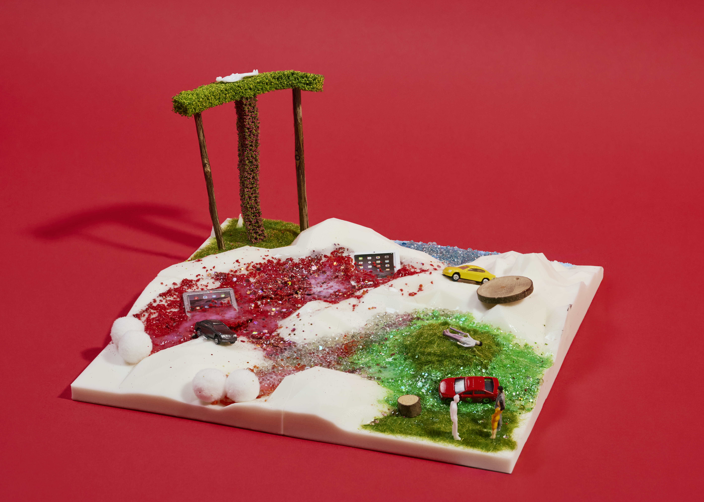

제8구역: 화산 오르네
지구인 분석 결과
1. AI에게 과도하게 의존해 스스로 생각하고 판단하는 능력이 떨어진다.
2. 스마트폰 의존성이 커서 스마트폰이 없으면 아무것도 할 수 없다.
3. 화성에서 숨을 쉬기 위해서 나노 슈트에 의존해야한다.
4. 디지털 기술의 발달로 진짜와 가짜를 구분하는 판별력이 부족하다.
화성인으로서의 입장
무력을 통한 급진적 저항주의
전략명: 불타오르네
우리 조의 전략은 지구인이 화성에 왔을 때 인간인 척하는 화성인이 지구인들을 속여 핸드폰을 뺏고 지구인들은 화산에 타 죽게 하는 것입니다. 그래서 용암에 파묻힌 핸드폰과 인간인 척하는 화성인이랑 대화를 나누는 지구인을 표현했습니다. 또한 나무 같아보이는 기둥은 저희의 종교를 표현한 것입니다.
곡 제목: 화산 오르네
(인간의 숨소리, 그리고 기괴한 화성인의 웃음소리)
(강렬한 신스 베이스가 깔리며)
인간인 척, 완벽한 Mask on.
웰컴 투 마스(Mars), 속아 넘어갔어.
(시그니처 대사) 싹 다 불태워라. Bow wow wow.
지구에서 온 손님들, 반갑게 악수해
눈빛은 친절하게, 하지만 속으론 계산해
"핸드폰 좀 빌려줘, 사진 찍어줄게"
그 순간 폰은 내 손에, 넌 영원히 Bye, 굿바이!
저기 저 나무 기둥, 우리만의 Holy shrine
우리 종교 앞에 무릎 꿇어, It's show time!
(불타오르네!) Fire! 붉은 화산이 터져!
(불타오르네!) Fire! 지구인들은 빌어!
용암 속에 파묻힌 네 최신형 스마트폰
화성인의 트릭에 전부 다 녹아내려 고통 속에 론리(Lonely)
싹 다 불태워라! Bow wow wow!